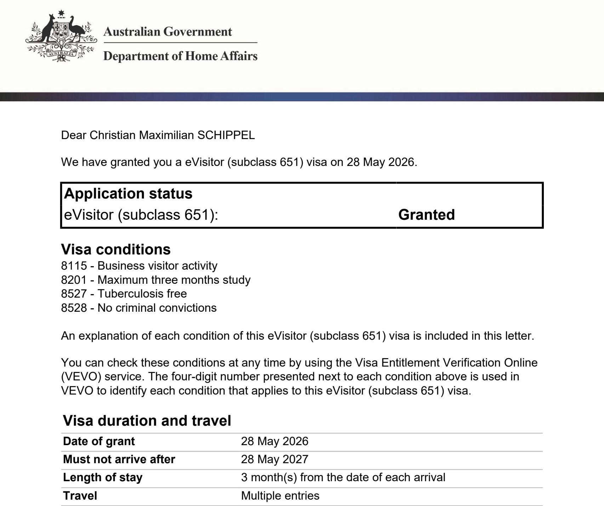

Wir wandern im Sommer 2026 nach Australien aus, als Familie zu viert. Bevor das Permanent-Visum 186 läuft, brauchen wir ein Visum, mit dem wir überhaupt einreisen können. Bei uns ist das geworden: das eVisitor 651. Kostenlos, online beantragt, in Sekunden bestätigt. Dieser Beitrag erklärt, warum wir diesen Weg gewählt haben, statt auf das oft genannte Visitor 600 oder direkt auf das 186 zu setzen. Außerdem, wie der Antrag bei uns gelaufen ist und was unter den Conditions im Klartext steht. Das ist keine Rechts- oder Migrationsempfehlung. Es ist unsere Erfahrung als eine deutsche Familie mit deutschem Pass. Und: Was wir hier beschreiben, ist eine bewusst riskante Wette. Wir reisen ohne langfristige Aufenthalts-Garantie ein und machen die nächsten drei Monate davon abhängig, dass wir vor Ort einen Sponsor finden. Findet sich keiner, fliegen wir zurück. Das ist uns bewusst. Mehr dazu im nächsten Abschnitt.
Warum überhaupt Tourist-Visum statt direkt 186, das haben wir in unserem Beitrag Mit oder ohne Migration Agent für Australien erzählt. Dieser Artikel hier setzt einen Schritt davor an: bei der konkreten Frage, mit welchem Touristen-Visum man als deutsche Familie einreist und wie der Antrag aussieht.
- Wir reisen mit dem eVisitor Subclass 651 ein. Das ist die kostenlose Touristen-Visa-Variante, die deutsche Pässe nutzen können.
- Granted bei uns am 28. Mai 2026. Antrag und Bestätigung gingen in Sekunden durch.
- Aufenthalt drei Monate je Einreise, gültig zwölf Monate ab Ausstellung, mehrere Einreisen erlaubt.
- Arbeiten ist nicht erlaubt, nur Tourismus und Geschäftsbesuche. Für die eigentliche Auswanderung brauchen wir später ein anderes Visum.
- Alle vier Anträge haben wir über einen einzigen ImmiAccount gestellt, jeweils mit der passenden Empfangs-Mail pro Person.
Vier Klicks, Sekunden später war es da
Wir hatten uns auf alles eingestellt. Lange Formulare, Wartezeiten, ein Bauchgefühl wie beim Visa-Antrag, das wir aus der ersten Zeit in Byron Bay 2016 noch kannten. Stattdessen lief es so:
Ich melde mich am 28. Mai morgens in meinem alten ImmiAccount an. Den habe ich seit meiner Koch-Zeit in Byron Bay, der ist ungefähr zehn Jahre alt und funktioniert immer noch. Ich starte einen neuen Visa-Antrag, wähle eVisitor 651, fülle die Felder aus, lade ein Passport-Foto hoch, klicke auf submit. Sekunden später kommt die Bestätigung per Mail: Visa granted. Beim zweiten Antrag für Lucy dauert es genauso lange. Bei den Anträgen für unsere Kinder Joris und Linnea ebenfalls. Vier mal die gleiche Erfahrung.
Wir hatten innerlich Stunden eingeplant. Am Ende waren wir nach ein paar Minuten am Rechner durch. Das Beste daran: keine Gebühr, keine Servicepauschale. Das Visum kostet nichts.
Warum wir überhaupt mit Tourist-Visum einreisen
Die naheliegende Frage: Warum nicht direkt das 186, das Permanent-Visum, das wir am Ende anstreben?
Die Antwort liegt am Sponsor. Das 186, das Employer Nomination Scheme, setzt einen Arbeitgeber voraus, der dich nominiert. Diesen Arbeitgeber haben wir noch nicht. Ich fliege am 23. Juni alleine vor und suche vor Ort. Erst wenn ein Sponsor steht, geht der 186-Antrag los. Bis dahin brauchen wir trotzdem einen Weg, überhaupt einreisen zu dürfen.
Theoretisch hätten wir auch den umgekehrten Weg gehen können: in Deutschland warten, einen Sponsor von zu Hause finden, das 186 von Offshore stellen, auf Bewilligung warten. Aus der Theorie heraus klingt das sicherer und logischer. Praktisch heißt es: Sponsoren stellen ungerne Leute ein, die noch nicht im Land sind. Und die Wartezeit auf eine 186-Bewilligung kann sich über Monate ziehen, in vielen Fällen länger. Ein Bridging Visa bekommt man nicht.
Ein Tourist-Visum ist eigentlich für Urlaub und Familienbesuche gedacht. Für unsere Situation funktioniert es trotzdem: Es überbrückt legal die Lücke zwischen Abflug aus Deutschland und Job-Offer in Australien. Das ist nicht ungewöhnlich, viele Auswanderer machen es so. Unser Migration Agent hat den Plan im Erstgespräch bestätigt: erst rein auf Tourist-Visa, dann vor Ort den Sponsor suchen, dann den eigentlichen Antrag stellen. Was danach kommt, also der Übergang in die nächste Visa-Stufe, ist Sache des Migration Agents, sobald es so weit ist. Wir greifen dem hier nicht vor.
Wir wollen klar sagen, was dieser Weg ist und was er nicht ist. Er ist riskant. Wir verlassen Deutschland ohne langfristige Aufenthalts-Garantie und machen die nächsten drei Monate davon abhängig, ob ich vor Ort einen Sponsor finde. Finde ich keinen, fliegen wir zurück. Das ist schwierig, finanziell und mental. Es ist keine Empfehlung. Jede Familie hat andere Rücklagen, andere Visa-Optionen, andere Zeitfenster. Wer mehr Geduld hat, wartet vielleicht lieber auf eine 186-Bewilligung von Offshore. Wer einen Job aus der Ferne organisieren kann, braucht den Umweg nicht. Für uns war es der beste und ehrlich gesagt einzige Kompromiss.
eVisitor 651 oder Visitor 600, der Unterschied
Wir sind bei unserer Recherche immer wieder auf das Visitor 600 gestoßen. Das ist auch nicht falsch, es ist nur nicht die einzige Option.
Für Pässe aus einer bestimmten Länder-Liste, hauptsächlich europäische Länder, gibt es das eVisitor 651. Deutsche Pässe gehören dazu. Inhaltlich überschneiden sich die beiden Visa stark: Tourismus, Familienbesuche, Geschäftsbesuche, drei Monate Aufenthalt, zwölf Monate Gültigkeit. Der entscheidende Unterschied steht im Preis und im Antragsweg.
- eVisitor 651: nur für Pässe aus einer festen Länder-Liste (deutscher Pass gehört dazu), Antrag rein online über ImmiAccount, kostenlos, in unserem Fall in Sekunden bewilligt.
- Visitor 600: offen für alle Nationalitäten, Antrag über ImmiAccount mit verschiedenen Streams (Tourist, Sponsored, Business), kostenpflichtig, längere Bearbeitungszeiten möglich.
- Aufenthalt und Gültigkeit: bei beiden Standard drei Monate je Einreise, bei 600 je nach Stream auch sechs oder zwölf Monate möglich.
- Verbindliche Übersicht: beim australischen Department of Home Affairs, dort steht auch die volle Länder-Liste für eVisitor.
Für uns war die Wahl klar. Wenn beides dasselbe leistet und das eine kostenlos ist, nehmen wir das kostenlose. Plus: das Visa über den vorhandenen ImmiAccount zu beantragen, war ein gewohnter Weg.
Wie der Antrag bei uns lief
Konkret hat das so ausgesehen. Wir haben uns vorher genau eine Sache überlegt: Bei welchem Account melden wir an, und wo gehen die Bestätigungen hin?
Bei mir bestand der ImmiAccount schon. Er ist noch aus der Zeit vor unserer ersten Ausreise nach Byron Bay vor rund zehn Jahren. Die Plattform sieht heute genauso aus wie damals, vielleicht ein paar Updates neuer. Sie wirkt schlicht, aber sie funktioniert. Wer noch keinen Account hat, legt einen neuen an, das geht direkt online unter online.immi.gov.au/ola/app.
Aus einem ImmiAccount kann man Anträge für mehrere Personen verwalten. Jeder Antrag wird einzeln ausgefüllt, das nimmt einem keiner ab. Bei den Daten geht es um die üblichen Sachen: Name laut Reisepass, Geburtsdatum, Pass-Nummer, ausstellendes Land, Gültigkeit, Foto. Dann die Fragen zu Gesundheit und Vorstrafen, alles vier Felder mit Ja oder Nein. Und am Ende eine E-Mail-Adresse, an die die Grant Notification geschickt wird.
Hier kommt der einzige kleine Trick aus unserer Sicht: Ich habe bei den Anträgen für Lucy und für die Kinder Lucys E-Mail-Adresse eingegeben, nicht meine. So gehen die drei Bestätigungs-Mails sauber in ihr Postfach, meine Bestätigung in meines. Wenn wir später am Flughafen oder beim Einchecken eine Confirmation brauchen, ist jeder selbst Herr über sein Dokument. Sonst hätte ich vier Bestätigungs-Mails in meinem Posteingang und Lucy keine.
Hochladen mussten wir bei jedem Antrag nur die Datenseite vom Reisepass, also die Seite mit Foto und persönlichen Angaben. Kein extra Foto vom Fotografen nötig. Weitere Unterlagen, Buchungen oder Versicherungen wurden im Antrag nicht abgefragt. Nach dem letzten submit waren wir durch.
Was im Visum steht, bei uns konkret
Die Grant Notification ist ein zweiseitiges PDF, das man als E-Mail-Anhang bekommt. Hier siehst du den oberen Teil (sensible Daten geschwärzt), darunter dieselben Felder noch einmal im Klartext.

- Application status: eVisitor (subclass 651), Granted.
- Date of grant: 28. Mai 2026.
- Must not arrive after: 28. Mai 2027. Das ist das Einreisefenster, zwölf Monate.
- Length of stay: 3 month(s) from the date of each arrival. Pro Einreise drei Monate Aufenthalt.
- Travel: Multiple entries. Wir können während des Einreisefensters mehrfach rein und raus.
- Visa conditions: 8115, 8201, 8527, 8528 (siehe nächster Abschnitt).
Das ist die formale Seite. Es hat etwas Behördenhaftes, ist aber überraschend lesbar, wenn man weiß, was die vier Conditions bedeuten.
Was wir damit dürfen und was nicht
Die vier Conditions auf einem eVisitor 651 sind standardisiert. Wir geben sie hier kurz im Klartext wieder, weil sie zwischen Geschäfts-Bla-Bla schnell untergehen.
Condition 8115, Business visitor activity. Bedeutet: arbeiten ist nicht erlaubt. Was geht, sind klassische Geschäftsreisen: Meetings, Verhandlungen, Konferenzen, ein Job-Interview vor Ort. Was nicht geht, ist regulär arbeiten gegen Gehalt. Wer mit Tourist-Visum einreist und arbeitet, riskiert die Aufhebung des Visums und Einreiseverbote. Wir halten uns daran.
Condition 8201, Maximum three months study. Studieren ist erlaubt, aber maximal drei Monate insgesamt. Für unseren Fall nicht relevant, Joris geht in Australien zur Schule erst, sobald wir auf einem anderen Visum sind.
Condition 8527, Tuberculosis free. Bei Einreise musst du nachweislich frei von Tuberkulose sein. Für deutsche Pässe in der Praxis kein Thema, kein Health Check für 651 nötig. Bei Verdacht oder Symptomen läuft das anders.
Condition 8528, No criminal convictions. Keine Vorstrafen mit einer Gesamtstrafe von zwölf Monaten oder mehr zum Zeitpunkt der Einreise. Auch hier ist kein Police Check für den Antrag nötig.
Wir lesen das alles so: Das Visum ist für Reisen, Familienbesuch und Geschäftstermine gemacht. Es ist nicht dafür gedacht, dass man darunter dauerhaft lebt und arbeitet. Genau deshalb ist es bei uns nur die Brücke. Die nächste Visa-Stufe muss kommen.
Was nach dem Tourist-Visum kommt
Unser Plan ab August läuft so: Christian kommt mit dem eVisitor 651 rein, sucht in Northern Rivers einen Sponsor-Arbeitgeber. Sobald ein Sponsor steht, geht der eigentliche 186-Antrag los. Diesen Antrag stellt unser Migration Agent für uns. Wie der Übergang von eVisitor 651 in den Antragsprozess für ein Permanent-Visum konkret aussieht, ist seine Baustelle. Wir vertrauen ihm das an, weil er das jeden Tag macht und wir nicht.
Heißt für diesen Artikel: Wir beschreiben hier nur, was bis 28. Mai 2026 wirklich passiert ist, also das Tourist-Visum selbst. Den Sprung zum 186 zeigen wir, wenn er tatsächlich gemacht ist. Wir wollen nichts schreiben, was wir noch nicht erlebt haben.
Wer mehr über das Ziel-Visum erfahren will, also das Permanent-Visum, findet alles dazu in unserem ausführlichen Guide zum 186-Visum für Familien.
Und falls du selbst überlegst, einen ähnlichen Weg zu gehen: rechne mit dem Worst Case. Mach dir vorher klar, was du tust, wenn der Plan schief geht. Darauf haben wir uns eingestellt, bevor wir die Tickets gebucht haben.
Häufige Fragen
Was ist der Unterschied zwischen eVisitor 651 und Visitor 600 für Australien?
eVisitor 651 ist die kostenlose Online-Variante des australischen Touristen-Visums, nur für Pässe aus einer festen Liste hauptsächlich europäischer Länder. Visitor 600 ist die kostenpflichtige Allgemein-Variante, offen für alle Nationalitäten, mit unterschiedlichen Streams. Als deutsche Familie konnten wir das eVisitor 651 nehmen, daher kein Antragspreis.
Was kostet das eVisitor 651 für Australien?
Das eVisitor 651 ist beim australischen Department of Home Affairs kostenlos. Bei uns wurde am Ende des Antragsprozesses keine Zahlung verlangt, und auf der Grant Notification ist auch keine Gebühr vermerkt. Andere Kosten können entstehen, zum Beispiel für Auslandskrankenversicherung oder Flüge, das sind aber keine Visa-Gebühren.
Wie lange darf man mit dem eVisitor 651 in Australien bleiben?
Pro Einreise bis zu drei Monate Aufenthalt. Das Visum gilt zwölf Monate ab Ausstellung und erlaubt mehrfache Einreisen. In unserem Fall steht in der Grant Notification: Date of grant 28. Mai 2026, Must not arrive after 28. Mai 2027, Length of stay 3 month(s) from the date of each arrival, Travel Multiple entries.
Darf man mit dem eVisitor 651 in Australien arbeiten?
Nein. Auf dem Visum liegt Condition 8115 Business visitor activity. Erlaubt sind nur Geschäftsbesuche wie Meetings oder Konferenzen, nicht jedoch reguläre Arbeit. Wer wirklich arbeiten will, braucht ein anderes Visum, zum Beispiel ein gesponsertes Arbeits- oder Permanent-Visum.
Können wir mit dem eVisitor 651 vor Ort ein Permanent-Visum beantragen?
Für uns ist genau das der Plan: einreisen mit dem eVisitor, vor Ort einen Sponsor-Arbeitgeber finden, dann das 186-Visum beantragen. Das ist ein bewusstes Risiko. Finden wir keinen Sponsor in drei Monaten, fliegen wir zurück. Den eigentlichen Antragsprozess vor Ort übernimmt unser Migration Agent. Die formalen Regeln dazu stehen beim australischen Department of Home Affairs, wir holen uns die Auskunft im Einzelfall vom Profi.
Stand: Juni 2026. Christian fliegt am 23. Juni vor, Lucy folgt mit den Kindern am 26. Juli. Sobald wir den nächsten Visa-Schritt gegangen sind, ergänzen wir hier oder schreiben einen eigenen Beitrag dazu.
Zuletzt aktualisiert: 09.06.2026 · Quellen: Visitor Subclass 600, 186 Employer Nomination Scheme (Australian Department of Home Affairs). Visum-spezifische Angaben in diesem Beitrag (Date of grant, Conditions, Aufenthaltsdauer) stammen aus unserer eigenen Grant Notification vom 28.05.2026.